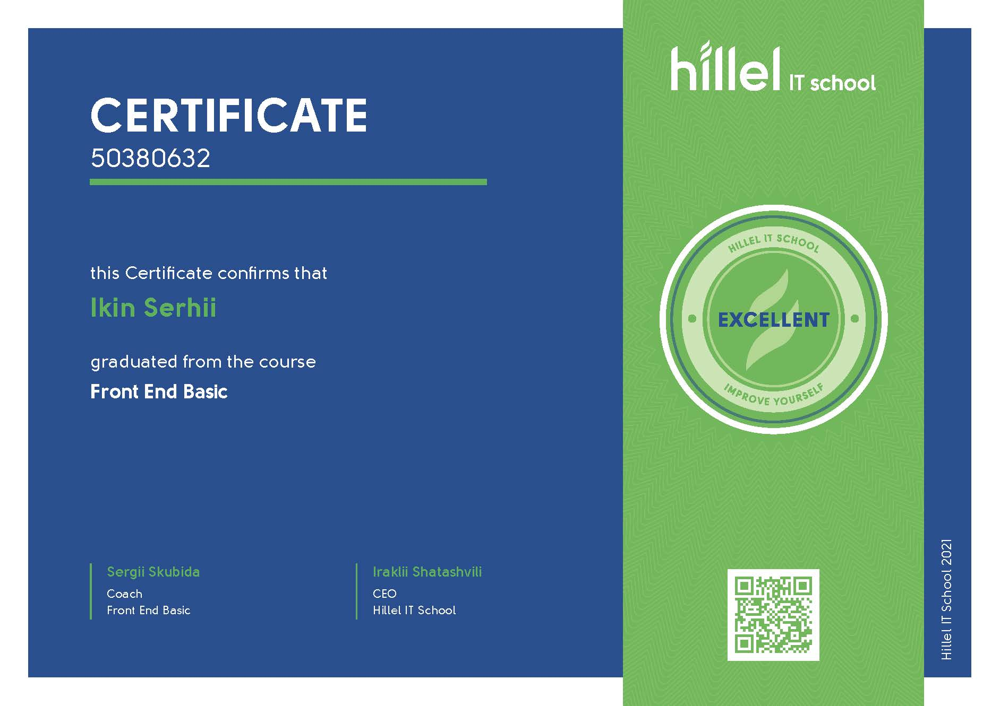
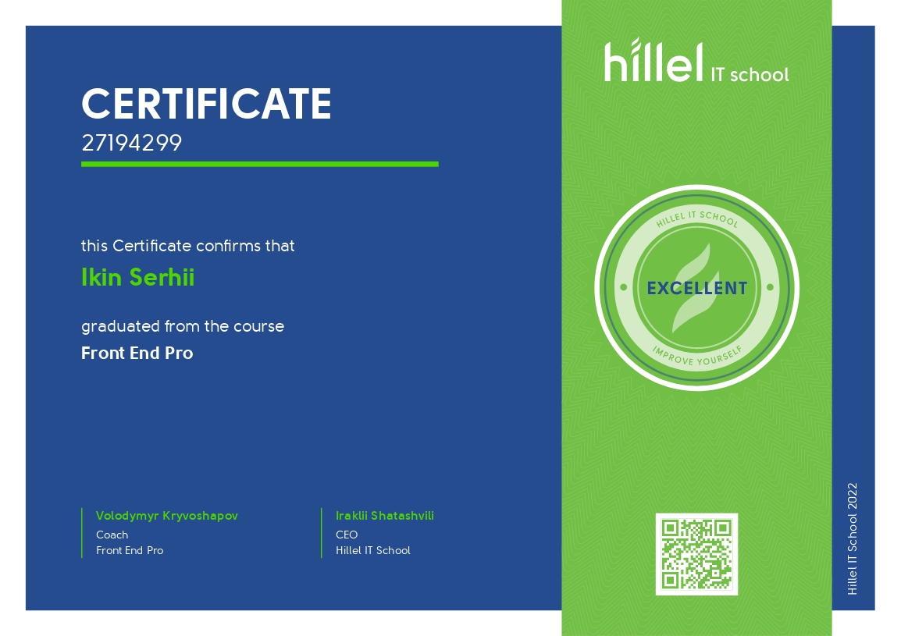
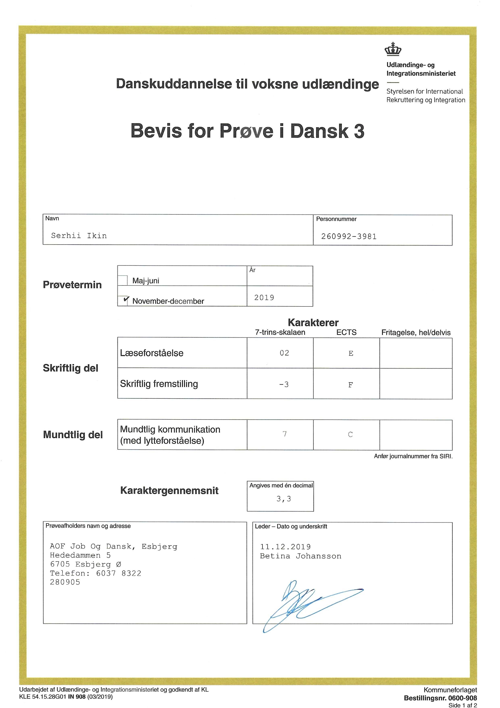

Сергій Ікін
Frontend розробник
Я закінчив курси в Hillel IT School. Добре володію Html, Css, JavaScript, React.js і трохи Node.js. Шукаю посаду фронтенд-розробника. Найбільше в цій професії я люблю дивитися на результат своєї роботи, це надихає мене робити це краще і розвиватися в цій сфері.
Контакти
Хороші навики
- Html, Css, Scss
- Firma, VS Code, Pixel Perfect
- JavaScript, Jquery, React.js
Навики в розвитку
- Node.js
- Webpack
- Redux
Мої навички :
- HTML: семантика, специфікація, гумова та адаптивна верстка, методологія BEM
- CSS: flexbox, Grid, Scss, перетворення, переходи, анімація. bootstrap, mui
- Git, Github
- Gulp, Webpack
- RegExp, WebSocket, Cookie, LocalStorage
- Figma, Adobe Photoshop
- JavaScript( примітиви, об'єкти, масиви, функції )
- Навички маніпулювання за допомогою DOM дерева
- Основні моделі програмування
- ООП in Javascript
- REST API
- MVC/MVP/MVVM архітектура
- Бібліотека React для SPA
- Принципи маршрутизації на прикладі бібліотеки react-router
- Збереження стану програми на прикладі redux і redux-thunk
Розмовні мови
- Англійська (A2, середній)
- Данська (B1, вище середнього)
Досвід роботи
Сервісна робота
- Кальянщик
- 5 років, 2010-2015;6 місяців, 2016-2017
- Doker Pub, Jaguar
- Кальяні послуги
Робота в сфері транспорту
- Водій таксі
- 6 місяців,, 2015-2016
Робота в галузі сільського господарства
- Працівник свиноферми
- Denmark
- 4.5 роки, 2017 - 2021
Освіта
- Національний університет біоресурсів і природокористування
- Факультет інформаційних технологій
- 2008 - 2014
- Магістр
Додаткова освіта, курси
-
Hillel Course, Frontend Basis (08.07.2021 - 27.09.2021)
- 
- 
-
Відгук мого вчителя з курсу Frondend Pro:
Сергій, максимально відповідальний та активний студент! В рамках курсу максимально швидко схоплював інформацію. Протягом курсу ставив точні питання для розуміння нової інформації. Успішно закінчив курс з найвищим балом, зайнявши 1-е місце у рейтингу.
Hillel Course, Frontend Pro (09.12.2021 - 19.04.2022)
Додаткова освіта, мови
-
Данська школа, данська мова, 2,5 роки
- 
Є можливість завантажити резюме у форматі PDF.